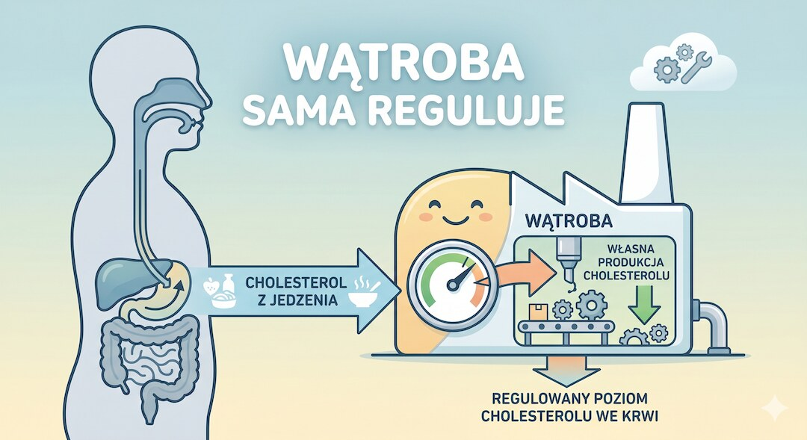
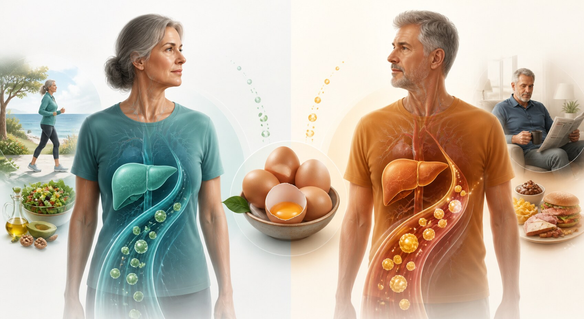
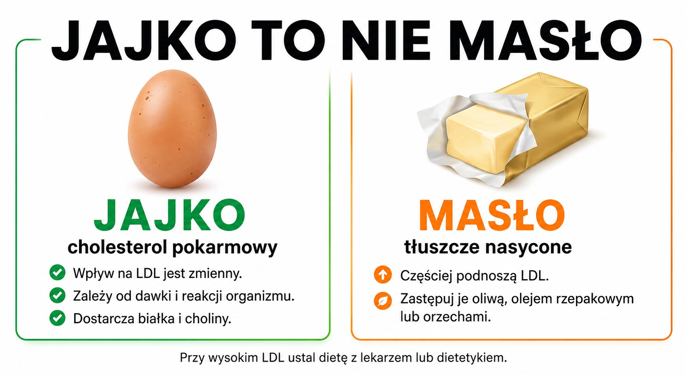
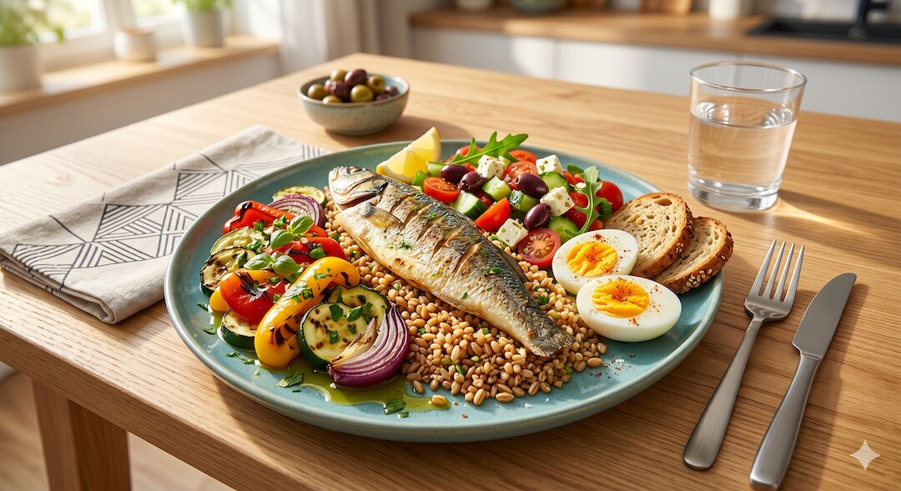

Jajko zawiera cholesterol pokarmowy, ale nie trafia on z talerza prosto do tętnicy. Wątroba reguluje własną syntezę cholesterolu, jednak ta kompensacja nie jest jednakowa u wszystkich. Badania randomizowane pokazują średnio niewielki wzrost LDL przy większym spożyciu jaj, dlatego uczciwy werdykt nie brzmi ani „jajka zatykają naczynia”, ani „jajka są obojętne dla każdego”.
Szybka odpowiedź
Jajka mogą nieznacznie podnosić LDL, a reakcja różni się między osobami i zależy od dawki oraz całej diety. Meta-analiza 17 badań randomizowanych wykazała średni wzrost LDL o 8,14 mg/dl przy większym spożyciu jaj. Jeśli masz prawidłowy lipidogram, jedno jajko dziennie może mieścić się w zdrowym jadłospisie; przy wysokim LDL decyzję oprzyj na wyniku i zaleceniu lekarza.
Kluczowe wnioski
- W meta-analizie 17 badań randomizowanych większe spożycie jaj podniosło LDL średnio o 8,14 mg/dl względem grup kontrolnych.
- Reakcja LDL na jajka jest zmienna, dlatego stała reguła „7 na 10 osób nie reaguje” z dostarczonej infografiki nie została wykorzystana.
- Masło dostarcza dużo tłuszczów nasyconych; ograniczenie ich i zastępowanie tłuszczami nienasyconymi jest stałym elementem zaleceń dla podwyższonego LDL.
- Jedno jajko dziennie może mieścić się w zdrowej diecie osoby z prawidłowym lipidogramem, natomiast wysokie LDL wymaga indywidualnej oceny całego jadłospisu.
Czy jajka podnoszą cholesterol LDL?
Organizm nie działa jak rura, do której cholesterol z żółtka wpada i osadza się bez kontroli. Wątroba produkuje cholesterol, a po jego dostarczeniu z jedzeniem może ograniczyć własną syntezę i wchłanianie. Ta regulacja zmniejsza wpływ posiłku na krew, ale nie kompensuje go identycznie u każdej osoby.
Meta-analiza 17 badań randomizowanych u zdrowych uczestników wykazała, że większe spożycie jaj podniosło LDL średnio o 8,14 mg/dl, a stosunek LDL do HDL o 0,14 względem grup kontrolnych. Badania trwały od 21 do 84 dni, więc wynik opisuje krótkoterminową zmianę lipidów, a nie pewny wzrost liczby zawałów.
To podważa oba skrajne hasła. Nie ma podstaw, by twierdzić, że każde jajko wyraźnie podniesie LDL, ale nie ma też podstaw do obietnicy, że u 70% ludzi LDL na pewno się nie zmieni. Jeżeli chcesz ocenić własną reakcję, punktem odniesienia jest wynik badań, a nie procent z infografiki.

Dlaczego reakcja LDL różni się między osobami?
Zmiana LDL po zwiększeniu liczby jaj nie jest jednakowa u wszystkich. Znaczenie mają wyjściowy lipidogram, cały sposób żywienia, dawka cholesterolu pokarmowego oraz indywidualna regulacja jego wchłaniania i produkcji. Dlatego średnia z badań opisuje grupę, ale nie przewiduje dokładnego wyniku konkretnej osoby.
Przeglądy badań pokazują zmienne wyniki zależnie od populacji i sposobu porównania diet. Nie pozwalają jednak uczciwie podzielić wszystkich ludzi na stałe grupy według prostej proporcji 70 do 30. Taki procent bez wskazania badania, dawki, czasu i definicji reakcji jest pozorną precyzją.
Jeśli jesz jajka regularnie i masz podwyższone LDL, oceniaj reakcję razem z lekarzem lub dietetykiem na podstawie porównywalnych badań oraz niezmienionych pozostałych elementów diety. Jednoczesna zmiana masła, masy ciała i ilości błonnika uniemożliwia przypisanie wyniku samym jajkom.

Dlaczego jajko i masło wpływają na LDL inaczej?
Jajko dostarcza cholesterol pokarmowy oraz niewielką ilość tłuszczów nasyconych. Masło jest natomiast skoncentrowanym źródłem tłuszczów nasyconych, które zwiększają LDL przez wpływ na produkcję i usuwanie lipoprotein w wątrobie. Dlatego tych produktów nie należy łączyć w jednym haśle „cholesterol z jedzenia”.
American College of Cardiology zaleca przy podwyższonym LDL ograniczać masło, tłuste mięso i produkty z olejem palmowym lub kokosowym, a zastępować je oliwą, olejem rzepakowym, orzechami i innymi źródłami tłuszczów nienasyconych. W sklepie pomaga sprawdzanie tłuszczów nasyconych na etykiecie, nie samego słowa „cholesterol”.
| MIT | FAKT Z BADAŃ | Praktyczny wniosek |
|---|---|---|
| Każde jajko wyraźnie podnosi LDL | Może podnosić LDL; wielkość reakcji jest zmienna, a średnia z badań nie opisuje każdej osoby. | Oceniaj cały jadłospis i własny lipidogram. |
| U 70% ludzi jajka na pewno nie zmieniają LDL | Przeglądy nie uzasadniają takiej stałej proporcji bez określenia dawki, czasu i definicji odpowiedzi. | Nie opieraj decyzji na arbitralnym procencie. |
| Jajko i masło działają na LDL tak samo | Jajko dostarcza cholesterol pokarmowy, a masło dużo tłuszczów nasyconych. | Przy wysokim LDL częściej zastępuj masło oliwą lub olejem rzepakowym. |

Ile jajek dziennie można jeść po 50-tce?
Stanowisko American Heart Association dopuszcza u zdrowej osoby do jednego całego jajka dziennie w ramach zdrowego jadłospisu. U starszych osób z prawidłowym cholesterolem wskazuje możliwość dwóch jaj dziennie ze względu na ich wartość odżywczą i wygodę. To górna możliwość w określonym kontekście, a nie cel dla każdego.
Liczy się cały wzorzec posiłku. Jajka podane z warzywami, pełnym ziarnem i niewielką ilością tłuszczu nienasyconego tworzą inny zestaw niż jajka smażone na maśle z boczkiem. Podobną zasadę widać przy analizie, jak cały sposób jedzenia wpływa na LDL, a nie pojedynczy produkt.
Przy prawidłowym lipidogramie jedno jajko dziennie może mieścić się w diecie śródziemnomorskiej lub DASH. Gdy LDL jest podwyższone, nie zwiększaj liczby jaj na podstawie samego artykułu: omów źródła tłuszczów nasyconych, błonnik i cały jadłospis z lekarzem lub dietetykiem.

Czy sposób przygotowania jaj ma znaczenie?
Gotowanie nie usuwa cholesterolu z żółtka, a samo smażenie nie tworzy go od nowa. Dla wpływu całego posiłku ważniejsze jest to, jaki tłuszcz trafia na patelnię i co podajesz obok. Masło, boczek oraz kiełbasa zwiększają ilość tłuszczów nasyconych niezależnie od jajka.
Jajka gotowane, w koszulce albo przygotowane na patelni z małą ilością oliwy lub oleju rzepakowego łatwiej włączyć do jadłospisu ograniczającego tłuszcze nasycone. Warzywa i pełnoziarniste pieczywo uzupełniają posiłek o błonnik zamiast dokładać kolejną porcję masła.
Nie trzeba wybierać jednej techniki na zawsze. Najpierw sprawdź, ile tłuszczu rzeczywiście dodajesz i jak często obok jaj pojawiają się przetworzone mięsa. To właśnie powtarzalny wzorzec przygotowania, a nie różnica między jajkiem miękkim i twardym, zmienia profil całego śniadania.
Kiedy jajka wymagają indywidualnej decyzji?
Indywidualnej oceny wymagają osoby z wysokim LDL, hipercholesterolemią rodzinną, cukrzycą lub rozpoznaną chorobą sercowo-naczyniową. W tych sytuacjach ogólna wskazówka o jednym jajku dziennie nie zastępuje zaleceń prowadzącego lekarza ani leczenia obniżającego cholesterol.
Do rozmowy warto mieć pełny lipidogram, a przy ocenie liczby cząstek miażdżycorodnych także wynik ApoB. Gdy lekarz potrzebuje szerszego obrazu ryzyka, pomocny może być również stosunek ApoB do ApoA1. Termin ponownego badania powinien wynikać z wyniku, leczenia i decyzji lekarza.
Nie odstawiaj samodzielnie leków ani nie zastępuj nimi zmian w diecie. Jeśli nie wiesz, jak często kontrolować parametry, zacznij od artykułu o badaniach krwi po 50-tce, a indywidualny harmonogram potwierdź podczas wizyty.
Najczęściej zadawane pytania
Czy jajka podnoszą cholesterol LDL?
Mogą podnosić LDL, ale wielkość reakcji różni się między osobami. Mechanizm obejmuje wchłanianie cholesterolu pokarmowego oraz zmianę własnej produkcji cholesterolu przez wątrobę. Meta-analiza 17 badań randomizowanych wykazała średni wzrost LDL o 8,14 mg/dl, dlatego przy wysokim LDL ważniejszy od internetowej reguły jest własny lipidogram.
Czy jajka podnoszą cholesterol i trójglicerydy?
Badania omawiane w tym artykule dotyczą przede wszystkim LDL, HDL i ich proporcji; nie uzasadniają obietnicy, że jajka zawsze podniosą albo obniżą trójglicerydy. Jeśli trójglicerydy są wysokie, lekarz powinien ocenić cały jadłospis, alkohol, masę ciała, glikemię oraz wynik pełnego lipidogramu.
Czy jajka gotowane podnoszą cholesterol?
Gotowanie nie usuwa cholesterolu z żółtka, więc jajko gotowane nadal może wpłynąć na LDL u osoby reagującej na cholesterol pokarmowy. Jego przewagą nad smażeniem na maśle jest brak dodatkowej porcji tłuszczów nasyconych. O znaczeniu decydują liczba jaj, cały posiłek i własny lipidogram.
Czy smażone jajka podnoszą cholesterol?
Samo smażenie nie tworzy cholesterolu, ale użyty tłuszcz zmienia profil posiłku. Jajko smażone na maśle dostarcza dodatkowych tłuszczów nasyconych, które częściej podnoszą LDL; oliwa lub olej rzepakowy ograniczają ten problem. Przy wysokim LDL ilość i sposób przygotowania ustal w ramach całej diety.
Źródła
- Dietary Cholesterol and Cardiovascular Risk: A Science Advisory From the American Heart Association
- Association between Egg Consumption and Cholesterol Concentration: systematic review and meta-analysis of randomized trials
- Eggs — a scoping review for Nordic Nutrition Recommendations 2023
- Prioritizing Health: Dietary Approaches for Elevated LDL-C — American College of Cardiology
Uwaga: Artykuł ma charakter informacyjny i edukacyjny. Nie zastępuje konsultacji lekarskiej, diagnozy ani leczenia.